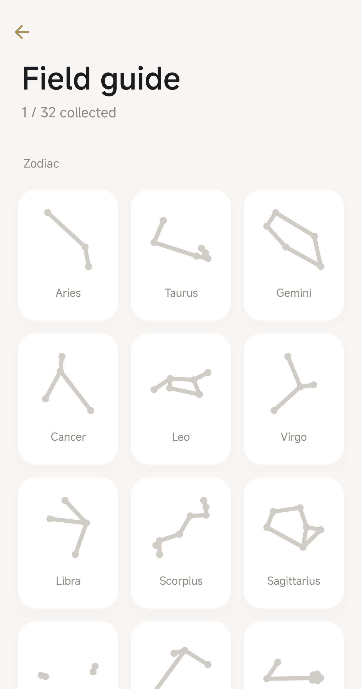
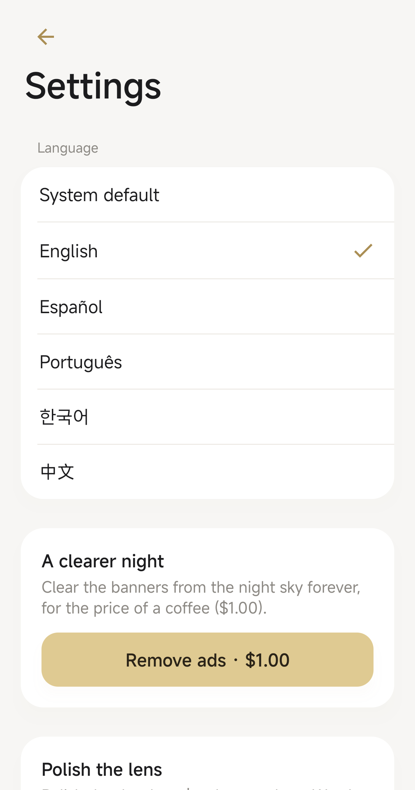

Apps / StarDex
Constellation field guide for AndroidStarDex
Find constellations offline, snap them, and fill your field guide. Now on Google Play.
Get it on Google PlayScreenshots



The app
StarDex is a constellation field guide that keeps working when the campground has no signal. Point your phone at the night sky and the constellation lines, drawn from GPS and the compass, float over the camera. There is no StarDex server and no account.
The night sky
The camera stays off until you turn AR on. GPS and the compass place 32 famous figures, including Orion, the Big Dipper, and the zodiac. Lines and names follow the phone, and the stars twinkle.
A polaroid
Center a constellation, take a photo, and save a card with the lines and the name to Pictures/StarDex in your gallery. The picture stays on the phone.
A field guide
Each catch turns a gray drawing into gold and unlocks a badge. Progress is stored only on this device.
Stories
Short myths and how to find each figure, in English, Korean, Spanish, Portuguese, and Chinese. Written so a family can read them together.
Offline
The sky guide does not need a connection. Internet is used for ads, the advertising consent message, and Google Play purchases.
Ads
A small banner sits at the bottom of the app. A one-time purchase removes it. “Polish the lens” is an optional rewarded video, shown only if you choose it.
Free on Google Play, with ads and a one-time in-app purchase. Ages 13 and over. Google Play · Privacy policy